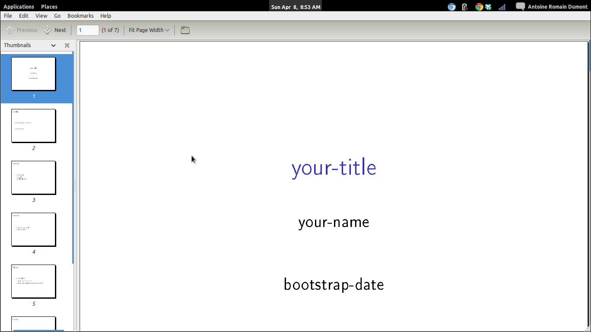
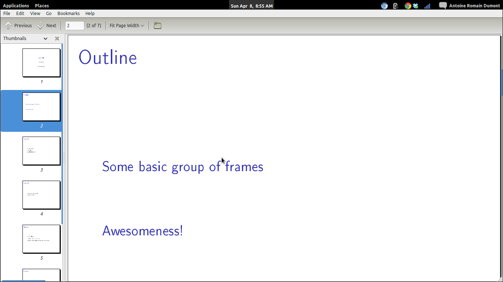
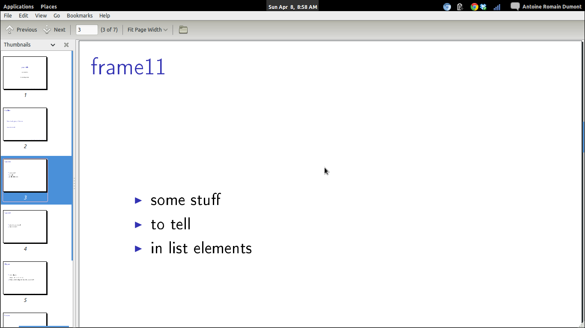
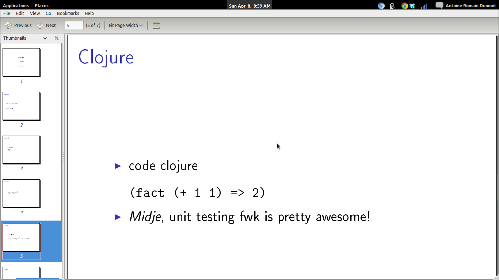
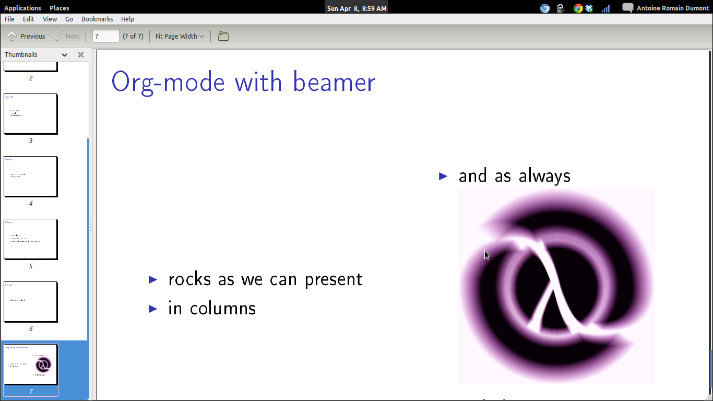

Howto beamer with org-mode
Table of Contents
1 Pre-requisites
1.1 emacs
1.2 with org-mode
2 Install the other pre-requisites
sudo aptitude install latex latex-beamer \ texlive-latex-extra texlive-fonts-recommended ttf-marvosym
3 Init a org file
3.1 Add some particular headers
\#+TITLE: your-title \#+AUTHOR: your-name \#+EMAIL: your-email \#+DATE: bootstrap-date \#+DESCRIPTION: some-description \#+KEYWORDS: some-keywords \#+LANGUAGE: en \#+OPTIONS: H:3 num:t toc:t \n:nil @:t ::t |:t ^:t -:t f:t *:t <:t \#+OPTIONS: TeX:t LaTeX:t skip:nil d:nil todo:t pri:nil tags:not-in-toc \#+INFOJS_OPT: view:nil toc:nil ltoc:t mouse:underline buttons:0 path:http://orgmode.org/org-info.js \#+EXPORT_SELECT_TAGS: export \#+EXPORT_EXCLUDE_TAGS: noexport \#+LINK_UP: \#+LINK_HOME: \#+startup: beamer \#+LaTeX_CLASS: beamer \#+LaTeX_CLASS_OPTIONS: [bigger] \#+BEAMER_FRAME_LEVEL: 2
They are escaped here (\#) otherwise, it's evaluated by org-mode. For real, replace the \# by #.
3.2 Example of org-code and the output
3.3 There is automatically a front-page
The informations comes from the previous blocks.

3.4 And a outline page
This will come from the content of the other frames below.

3.5 Frame 1
* Some group of frames ** frame11 *** some stuff *** to tell *** in list elements

3.6 Frame 2
** frame12 *** what do you know! *** nice or what?

3.7 A frame about clojure in another group
* Awsomeness! ** Clojure *** code clojure *** /Midje/, unit testing fwk is pretty awesome!

3.8 About emacs
** Emacs *** It's pretty cool too!

3.9 Org
** Org-mode with beamer *** rocks as we can present :BMCOL: :PROPERTIES: :BEAMER_col: 0.5 :END: *** in columns *** and as always :PROPERTIES: :BEAMER_col: 0.5 :END: [[./clj-pink.png]] *** include images

3.9.1 Wait! What's with the syntax?
It's a binding that does that for us.
Selection the item that you want in columns then C-c C-b |, this will ask you for the size of the column (ratio
between 0 and 1). Give, for example, 0.4 then hit enter. Do the same all the other columns.
4 Launch the export
C-c C-e will launch a buffer with the options for exporting in the format you want!
| C-c C-e d | compile in latex, then export to pdf and open it. |
5 And that's it
6 Pros/Cons
Here's only what i think of, feel free to think otherwise.
| Pros | Cons |
|---|---|
| Plain text | Not editable in browser (as in google docs) |
| Versionable (you choose your DVCS) | |
| Share easy |